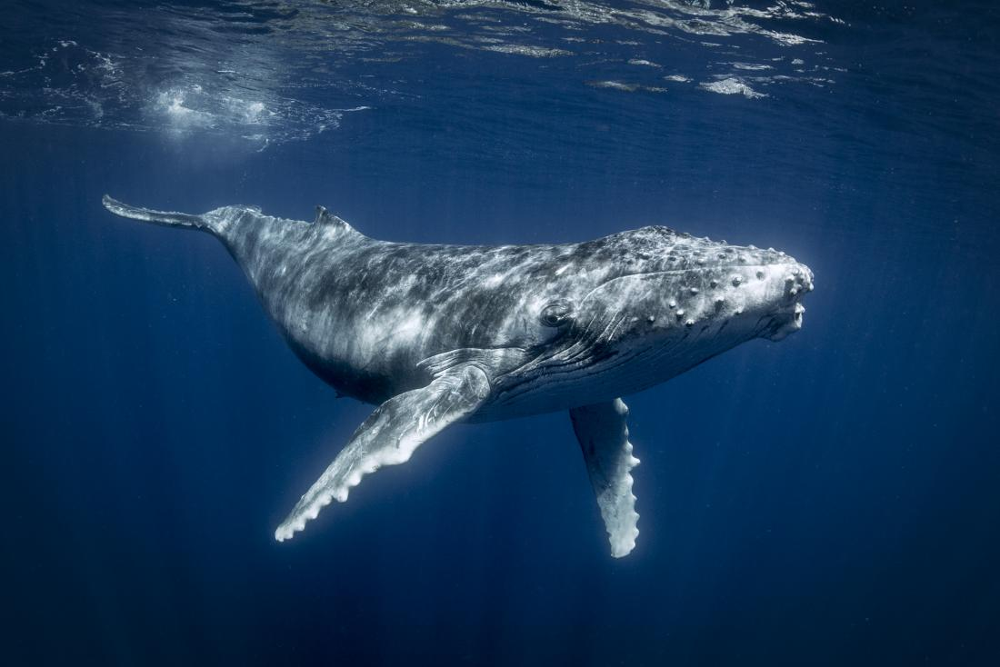

The blue whale (Balaenoptera musculus) is a marine mammal belonging to the baleen whale suborder Mysticeti. Reaching a maximum confirmed length of 29.9 meters (98 feet) and weight of 173 tonnes (190 tons), it is the largest animal known to have ever existed. The blue whale’s long and slender body can be various shades of grayish-blue dorsally and somewhat lighter underneath.
